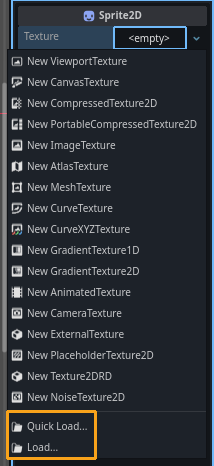
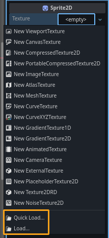
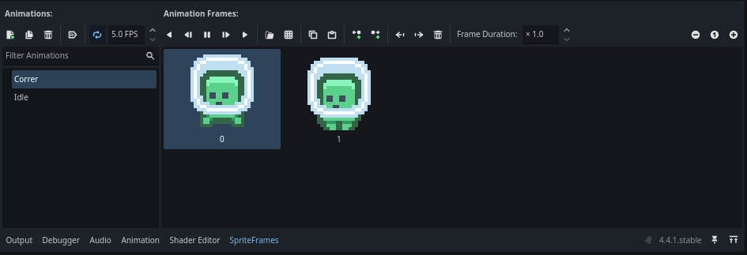

Nuestro primer plataformero

En este tutorial paso a paso, crearemos las bases de un plataformero básico usando Godot engine. Al finalizar, tendremos un prototipo con las siguientes características:
- Personaje 2D con movimiento básico
- Nivel editable con tilemaps
- Controles de movimiento para pantallas táctiles
Creando nuestro proyecto
Para empezar, necesitamos crear nuestro proyecto en Godot. Los proyectos en Godot se representan mediante carpetas, estas carpetas deben de tener el mismo nombre de nuestro proyecto, todo asset de nuestro juego ira dentro de esta carpeta. Ponle un nombre a tu proyecto y crea el proyecto para empezar a editarlo.
Nuestro personaje
Godot funciona a partir de un árbol de escenas y nodos. Una escena esta constituida por multiples nodos, y un nodo individual puede ser muchas cosas, como un bloque de texto, una textura o una pista de audio. Podemos ver las escenas como una construcción, y los nodos como los ladrillos de esta. Para añadir nodos a nuestra escena, tendremos que buscar en el apartado superior izquierdo del editor.

Nuestro personaje sera un nodo de tipo CharacterBody2D, para añadirlo a la escena, tendremos que seleccionar cualquiera de los dos botones subrayados (+, "Other Node"), y luego buscaremos CharacterBody2D
Una vez creado el nodo CharacterBody2D, podemos empezar a añadir nodos hijo a la escena. Para empezar, necesitamos ver a nuestro personaje usando una textura, esta textura puede ser una imagen plana o una animación. Si deseamos añadir animaciones a nuestro personaje, la mejor practica es utilizar un Spritesheet
Textura estática
Para mostrar a nuestro personaje con una imagen estática, creemos un Sprite2D como hijo del CharacterBody2D. Para que podamos ver nuestro Sprite, tendremos que asignar una textura a la propiedad de Texture, localizada en el apartado de propiedades de nodo en la parte superior derecha del editor.
 

Siéntete libre de usar cualquier imagen que desees, para propósitos de este tutorial, puedes usar el icono de Godot incluido por defecto en el proyecto, o bien puedes uno de estos aliens (Click para descargar):
Asegurate de guardar cualquier imagen que guardes dentro de la carpeta de tu juego!
Textura animada (Spritesheet)
Si en cambio, queremos animar a nuestro personaje, debemos de usar un Spritesheet. Un Spritesheet es una sola imagen que contiene multiples cuadros de animación separados vertical y/o horizontalmente. Puedes buscar un Spritesheet, realizar el tuyo, o descargar cualquiera de estos Spritesheet básicos:
Una vez tengamos nuestra textura, crearemos un nodo AnimatedSprite2D como hijo de nuestro CharacterBody2D. Notaremos que este nuevo nodo no tiene una propiedad de textura como Sprite2D, en cambio, tiene una propiedad llamada Sprite Frames, que se encuentra en la categoría de Animation, daremos click y crearemos un nuevo recurso de SpriteFrames
Al crear el recurso de SpriteFrames, podemos acceder a el y podremos ver una nueva ventana, localizada en la parte inferior del editor, este es el editor de animaciones, a continuación podrás ver los elementos mas importantes de este editor:
- Crear nueva animación
- Duplicar animación
- Eliminar animación
- Autoplay al correr proyecto
- Loop/Controlar FPS
- Reproducción de animación
- Abrir Spritesheet
- Borrar frame de animación
- Listado de animaciones
Por el momento, crearemos dos animaciones (con el botón #1), y las nombraremos: Idle y Correr. Al abrir nuestro Spritesheet (con el botón #7), veremos una nueva ventana:
Esta es la ventana de Selección de frames de Spritesheet, y es aquí donde seleccionaremos los frames que usaremos de nuestro Spritesheet. En el apartado derecho de esta ventana podremos ajustar la cantidad de cortes que se le harán a nuestra imagen. En nuestro caso, nuestro Spritesheet solo se compone de 2 cuadros horizontales, entonces ajustaremos la propiedad de Horizontal a 2 recortes, y Vertical a 1. (En caso de usar un Spritesheet online o propio, debes de ajustar la cantidad de recortes al numero de frames que tenga tu imagen, algunos Spritesheets también contienen separación entre los frames, ajustable por la propiedad Separation)
Una vez este recortada correctamente nuestra imagen, seleccionaremos los frames en el orden que queremos que se reproduzca nuestra animación (Tip!: En caso de usar un Spritesheet de 2 frames como el que usamos en este tutorial, es recomendado seleccionar el 2do frame de animación primero, de esta manera el personaje empezara la animación en movimiento, y no parecerá arrastrándose al mover)
Para nuestra "animación" de Idle, crearemos otra animación (Botón #1), la llamaremos "Idle" y repetiremos el proceso de abrir nuestro Spritesheet (Botón #7), sin embargo esta vez solo seleccionaremos un cuadro. La "animación" de Idle se reproducirá cuando nuestro personaje no este realizando ninguna acción. Listo! Asi se vera la interfaz del editor cuando tengamos nuestras animaciones preparadas para usar después.
Añadiendo colisión
Ahora que podemos ver a nuestro personaje en el editor, tenemos que darle una forma, con la que podrá interactuar y colisionar con el mundo y sus elementos. Para añadir esta forma, crearemos un nodo CollisionShape2D como hijo de nuestro CharacterBody2D, ten mucho cuidado con esto!, pues un CollisionShape2D que NO sea hijo de un cuerpo de físicas como nuestro CharacterBody2D NO funcionara! Verifica que la siguiente jerarquía sea similar a la tuya:
Podrás notar que nuestro nuevo nodo tiene una advertencia! No te preocupes, esto es debido a que nuestro nodo todavía no tiene una forma definida. Para crear una forma, buscaremos la propiedad Shape en el apartado de propiedades de nodo, localizada en la parte derecha del editor.
Al intentar crear un recurso de forma, veremos un listado con multiples opciones, quizá demasiadas, pero no te abrumes! pues en la mayoría de casos solo necesitaremos de tres opciones:
-
CircleShape2D: Un circulo -
RectangleShape2D: Un rectángulo -
CapsuleShape2D: Una capsula
Siéntete libre de probar y experimentar con cualquiera de estas opciones.